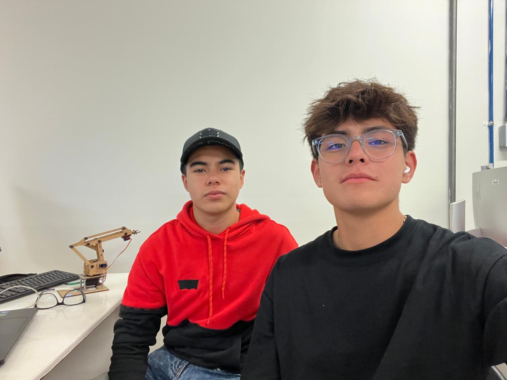

Portafolio de Actividades
Introduccion a Ing. Mecatrónica
Departamento de Ciencias e Ingenierías | Universidad Iberoamericana Puebla, México.
Práctica Carro Bluetooth

- Resumen -
Para esta práctica había que controlar un carro a través de bluetooth con la aplicación de APP inventor desde nuestros dispositivos móviles.
- Introducción -
Esta práctica se enfoca en controlar dispositivos utilizando tecnología Bluetooth, con Arduino y MIT App inventor como las plataformas principales.
El objetivo de esta actividad es desarrollar tanto habilidades técnicas en la programación y configuración de estos dispositivos como entender las numerosas aplicaciones que pueden lograrse al combinar la potencia de Arduino con la flexibilidad de la conectividad Bluetooth. Así mismo, razonamos los funcionamientos y conexiones que tiene el bluetooth.
- Materiales -
-Arduino UNO
-Modulo bluteooth HC-05
-Protoboard
-Pilas
-Cables macho-macho y hembra-macho
-Puente H L298N
-Motores reductores
-Llantas para los motores reductores
-Rueda loca
-Servomotor
-App inventor
-Corte DXF
-Impresión 3D
- Desarrollo -
Para poder lograr el desarrollo de esta práctca correctamente primero tuvimos que hacer el diseño visual en App inventor para después pasar a los bloques que harán funcionar el sistema dentro de esta misma plataforma.
Después habría que conectar todos los componentes del proyecto entre sí como lo son la protoboard, el arduino, el puente H, etc. Posteriormente se realizó el código que fue el último detalle para que el carro pudiera funcionar de manera eficiente y como lo deseábamos.
- Diseño -
La práctica fue diseñada empleando la plataforma MIT App Inventor, una herramienta intuitiva que facilita el desarrollo de aplicaciones móviles de manera simple y accesible. A través de esta plataforma, se creó una aplicación específica para controlar dispositivos conectados al Arduino mediante Bluetooth; como en este caso, el carro controlado por bluetooth.
La aplicación que hace al carrito moverse tiene un diseño simple, el título de para qué sirve esa interfáz,cuenta con tres botones en la parte superior que, como el nombre de estos indica, sirven para conectar el bluetooth, desconectarlo y salir de la aplicación. También tiene botones que tienen imagenes de flechas que, conforme la orientación de las flechas, indica para donde se mueve el carrito. Así mismo también tiene un botón central que sirve para detener al carrito en cualquier momento. Abajo de las flechas y hay dos botones para poder mover el servomotor, que funciona como una pinza; estos botones funcionan para poder abrir y cerrar la pinza.
Finalmente, bajo esos botones para mover las pinzas se encuentra una imagen de un gran campeón, "El rayo" Mcqueen.
Codigos


Construcción
Para la construcción de este proyecto, el carro controlado por bluetooth, hubiéron varias etapas. Primero que nada había que decidir que aspecto tendría el coche; una vez hecho esto diseñamos la base del carro en SolidWorks. Es una base ancha y larga para que pudieran caber todos los elementos necesarios.
Después de desarrollar la base de nuestro carrito era tiempo de ver cómo lo manejaríamos. Como ya se ha mencionado a lo largo de este reporte, el carrito funcionaría a través de bluetooth.
Era turno de trabajar con MIT App inventor. Aquí desarrollaríamos los controles del carrito y estableceríamos los comandos que quisiéramos que se trabajarían junto con el código.
Una vez estuviera lista la base y la interfáz en donde lo manejaríamos, era momento de realizar todo lo que tuviera que ver con las conexiones. Conectamos las enentradas del puente H al arduino, así como también el positivo y negativo de la pila. También, en el puente H, se conectaron los dos motores reductores que ocupamos.
Al protoboard se conectaron el ground y el positivo, así como también algunos pines del puente H. Para el arduino ya solo fue ir viendo en que pines conectar algunos pines del puente H y conectar GND y 5 volts al protoboard.
Los pines del bluetooth se conectaron directamente a los diferentes pines del arduino.
El servomotor se conectó a positivo y negativo del protoboard y a un pin del servomotor.
Después de ya tener todo conectado era momento de empezar a trabajar con el código. Como mencióne anteriormente, el código, para que pudiera funcionar con el bluetooth, se trabajó junto con MIT App Inventor. Las letras que puse de entrada en los diferentes botones de App inventor servían para que, al presionarlos, mandara la señal y pudieran hacer la acción correspondida.
También, en el código, se trabajo con máquinas de estados para que, cuando una llanta recibiera una señal "alta", la otra pudiera recibir la misma señal"alta" y de esta manera ir para delante o para atrás. Del mismo modo, con la máquina de estados, se trabajo para que, como se explicó anteriormente, si una llanta recibía una señal "alta" la otra recibiera la señal contraria, "baja", para que pudiera ir para la izquierda o para la derecha.
El botón central, que es el que sirve para detener al carrito, se trabajó, de igual manera, con máquina de estados. Se recibía la misma señal "baja", en ambas llantas para que pudieran detenerse.
Para hacer que las pinzas funcionaran, fue también con App inventor, al darle la señal de una letra en la plataforma mencionada, la misma letra se reescribe en el código para que pueda funcionar de buena manera; claro que también, al darle el ángulo de qué tanto quería que se moviera el servo.


- Resultados -
Los resultados obtenidos fueron positivos. Logramos que el coche funcionara de la manera esperada, seguía los comandos dados, al igual que la pinza.
- Conclusiones -
Como mencioné anteriormente fue un proyecto que salió como esperábamos. Aprendimos a como utilizar el puente H y como funcionan estos elementos entre si.
- Referencias -
Girón Nieto H. Clase de introducción a la mecatrónica, 2024